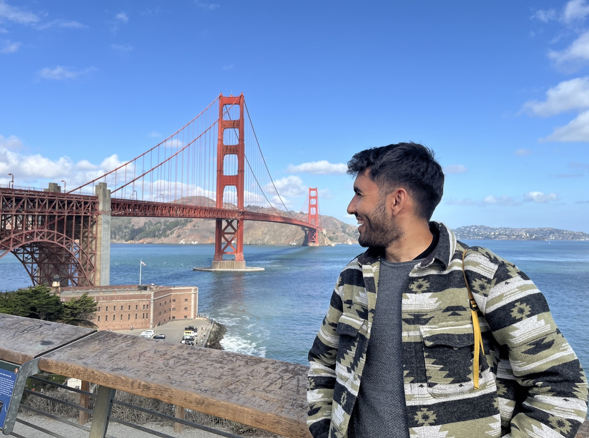

Erman Reads
A personal research site using AI agents to explore archives and public sources.

SpaceX
— From Surf Beach to Starlink — one launch, from the coast to orbit, and the bigger picture behind it
History
— stories found in archives, from ancient tablets to public diplomatic papers
LA Moto Outreach
— researching motorcycle YouTube creators for potential collaborations with a friend’s visor art
On repeat
Music for reading, working, and getting absorbed.
An Anthropic-inspired mix I made with Stable Audio 3 on fal.ai. Listen on YouTube.